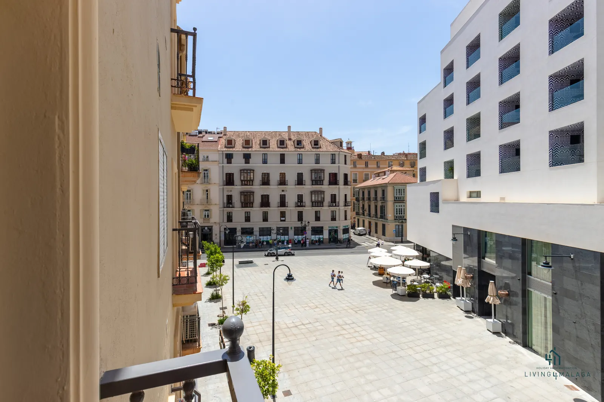

From Málaga airport to Hoyo de Esparteros
Train, bus and taxi to the old town
From Málaga airport, the quickest option by public transport is the C1 local train: 12 minutes to Málaga-Centro Alameda station, the last stop, then 6 minutes on foot to Calle Hoyo de Esparteros 9. The Line A Airport Express bus costs €4 and stops at Alameda Principal - Sur, 6 minutes away on foot. Taxis use the meter: from the airport, the minimum fare is €18.24 on weekdays from 06:00 to 22:00.
No intermediary commissions
Choose an apartment and book on the official website, living4malaga.com.
Reviewed on
Train, bus or taxi
What you need to know about each option, with the timetables published in November 2026.
| C1 train | A Express bus | Taxi | |
|---|---|---|---|
| Where to catch it | The airport's local train station | Level 0, Arrivals, opposite the transport hub | Level 0, Arrivals |
| Where to get off | Centro Alameda, the last stop | Alameda Principal - Sur | Ask to be dropped at the entrance of the H10 hotel on Plaza de Hoyo de Esparteros |
| Journey time | 12 minutes (17 for the 07:19) | 21 to 35 minutes, by the published timetable | Depends on traffic |
| First departure from the airport | 06:44 | 07:00 | — |
| Last departure from the airport | 00:54 | 01:15 on Monday to Friday nights; 01:10 on Saturday, Sunday and holiday nights | — |
| Frequency | Every 20 minutes most of the day; every 35 early morning (every 35-40 until 09:54 on Saturdays, Sundays and holidays) and every 30 from 22:54 | Every 20-35 minutes; the last bus leaves 75-80 minutes after the previous one | — |
| Fare | €1.80 for a single ticket | €4 | Meter; minimum €18.24 on weekdays, 06:00 to 22:00, and €22.48 or €25.80 at night, at weekends, on public holidays and on 24 and 31 December and 5 January, depending on the time |
| How to pay | Ticket office, machines or contactless card at the gates | Cash or card on board, or the EMT Málaga app | — |
| Walk to Hoyo de Esparteros 9 | 6 minutes | 6 minutes | — |
Renfe timetable valid 23/11 to 22/12/2026 and EMT timetable 18/11 to 31/12/2026. They may change on public holidays and in other seasons, so check before you travel. Train fare: Renfe's fare for 1 and 2 zones (Airport, zone 1; Centro Alameda, zone 0). Taxi: City Council fares updated in March 2026. Local train map (Spanish) · Renfe tickets (Spanish) · EMT Line A (Spanish) · Aena: train · Aena: bus · Taxi fares (Spanish)
From the stop to the door
Walking minutes to Calle Hoyo de Esparteros 9, measured on the street map.
- 6 min
Centro Alameda station
End of the C1 line.
- 6 min
Alameda Principal - Sur stop
A Express bus stop.
Before you leave the airport
Pay by card on the train
You can pay for a single ticket at the gates with a contactless card or your phone. Tap again when you exit, or you'll be charged the maximum fare.
Arriving late at night
There are no trains between 00:54 and 06:44, and no buses between the last departure (01:10 or 01:15) and 07:00. At those times, take a taxi.
Taxi
There's no fixed fare to the centre: you pay the meter. Add €0.58 for each suitcase in the boot, and €2.23 between 00:00 and 06:00. Taxis can't stop right outside the door; they can stop at the entrance of the H10 hotel, on the same square, a few steps away.
Lift
The building has a lift for your luggage.
Check-in
Check-in is from 16:00 with an electronic lock. Earlier access isn't possible.
Back to the airport
The C1 train leaves from Centro Alameda, 6 minutes' walk away. By taxi, a €6.49 airport supplement is added to the meter.
Still need somewhere to stay?
Six apartments at Calle Hoyo de Esparteros 9, a building with a lift 6 minutes' walk from Centro Alameda station.
Find yours, or see the penthouse with a terrace: Find your apartment · Urban Penthouse Terrace
Questions about getting here
What's the fastest way from the airport to Hoyo de Esparteros 9 by public transport?
The C1 local train: 12 minutes to Centro Alameda station, then 6 minutes on foot to Calle Hoyo de Esparteros 9.
How much is the train?
€1.80 for a single ticket: that's Renfe's fare for 1 or 2 zones, and the trip runs from zone 1 (Airport) to zone 0 (Centro Alameda). You can pay with a contactless card at the gates.
How much is the bus?
€4, in cash or by card on board, or with a ticket in the EMT Málaga app. Luggage travels free.
How much is a taxi?
There's no fixed fare: you pay the meter. From the airport the minimum fare is €18.24 on weekdays from 06:00 to 22:00, and €22.48 or €25.80 at night, at weekends, on public holidays and on 24 and 31 December and 5 January, depending on the time. Add €0.58 for each suitcase in the boot (City Council fares updated in March 2026).
Will the taxi drop me at the door?
No. Taxis can't stop right outside the door; they can stop at the entrance of the H10 hotel, on the same square, a few steps away.
What if I land in the middle of the night?
There are no trains between 00:54 and 06:44, and no buses between the last departure (01:10 or 01:15) and 07:00. At those times you'll need a taxi.
Does the building have a lift?
Yes, the building has a lift.
Can I check in before 16:00?
No. Check-in is from 16:00 with an electronic lock.
Choose your apartment
Book on the official website, with no intermediary commissions.